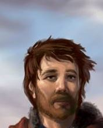

Second-Lieutenant Markuss Keidann is a Latvian commanding officer of the 3rd Courland Battalion (and later, Regiment) under the command of Lieutenant Wilks and the “protagonist” of the story. Born into a simple family in Aizpute and raised in the baptist faith, Markuss was called to serve the army just before the war started, becoming a brave soldier and officer.
In 1917, Markuss defies general Davilov’s orders to protect his brother Kris but continues in the army right until the Battle of Riga. For his differences with the new Socialist government, Markuss and his fellow anti-bolshevik officers (with the exception of Wilks) are considered a persona non-grata. He flees Riga, receiving a shot wound in his leg leaving him almost paralized for a year in 1917, and returns to his hometown in german-occupied Kurzeme.
In 1918 he joins the newly formed independent Latvian Army as a Lieutenant and fights in the war until its final days, being present in every major event until the battle of Daugavpils. For his actions in the war of independence he is nicknamed the Lion of Kurzeme for his ferocity and his lion-like appearence.
He marries Anna in 1917 and his first daughter is born in 1919.
Appearance and Character #
Markuss is a stocky, green eyed and auburn haired Keidann, resembling his father. Keidann is a kind and patient man, fond of smiling, but also sometimes sad or troubled by the increasing violence of the war. Altough a brave soldier, he is sometimes regarded as a bad or foolish tatician, being constantly berated by Wilks for compromising the victory in battle when forced to make costly maneuvers.
Tought not educated formally besides his local school in Aizpute, Markuss is mild-mannered with a faint “rednecky” charm. He is a strong follower of the Baptist church and puts great importance with his relation with Pastor Frejss. Markuss personally holds the view that war is horrible, but not the worst thing that can happen to men. He holds the opinion that the best choice is always the one that saves those under his command, but as an officer sometimes has trouble in giving commands that deaths might lead to “the greater good”.
(or as Lewis puts it: To kill or to be killed in war is not murder. Rather, war is a species of punishment that may require our death or the death of the enemy, but we cannot hate or enjoy hating those we kill. Punishment is necessary, but we cannot enjoy that which we must do. He even suggests that if in World War I some young German and he had simultaneously killed one another, the moment after their death neither of them “would have felt resentment or even any embarrassment. I think we might have laughed over it.")
After losing his brother and being almost paralized in 1917, Markuss becomes a lot more bitter and sad before being reinspired to fight for an independent Latvia.
History #
[To be completed]